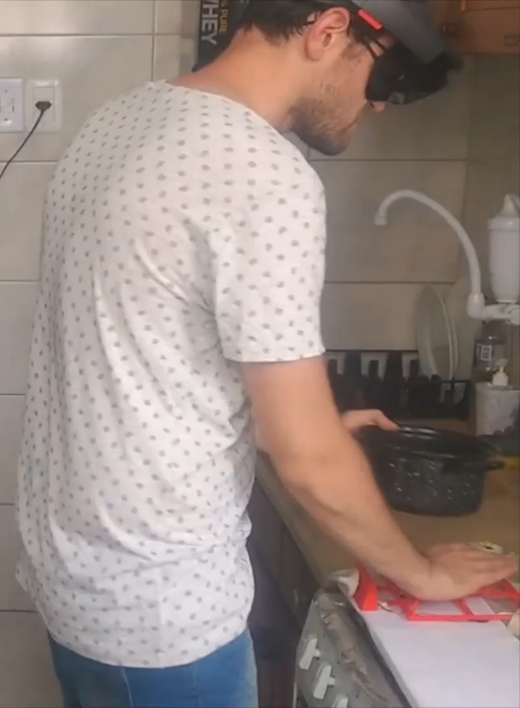

Personal Info



| Name | Renan Luigi Martins Guarese |
| How do I say 'Renan'? | 'Hen' + 'Uh' |
| Citation | Guarese, R. |
| Also goes by | Luigi | he/ele |
| Reach out | guarese@kth.se |
Professional Experience
| 🏫 KTH, Stockholm |
| 2024 - Present | Postdoctoral Researcher at KTH |
| + | Digital Futures fellow - SMART Pharmaceutical Industry project |
| 🏫 RMIT, Melbourne |
| 2024 - Present | Research Assistant at Centre of Digital Ecosystems |
| + | Plastics NZ EcoVis project |
| 2022 - 2024 | Teaching and Research Sessional at School of Computing Tech |
| + | Tutor for 'Mixed Reality', 'Interactive Digital Media Project', 'Foundations of AI', and 'Programming Studio 1' |
| 2020 - 2024 | PhD Scholarship at ATN - AR as assistive tech |
| + | Research, development and user testing of micro-guidance sonified AR methods for people who are blind and in no visibility conditions |
| 🏫 UFRGS, Porto Alegre |
| 2019 - 2020 | MSc Scholarship at CNPq - Situated Data Visualization |
| + | Research, development and user testing of interactive Augmented Reality visualization systems |
| 2017 - 2018 | Undergrad researcher at PPGIE - Physics simulations in AR |
| + | Research and development of an Augmented Reality application for mobile devices using Unity and Vuforia |
| 2016 - 2016 | IT tutor for high school kids and senior citizens at Colegio Aplicacao |
| 🏫 Halmstad University, Halmstad |
| 2019 - 2020 | MSc Exchange Scholarship at CERES - Electromagnetic Compatibility in AR DataVis project |
| 🏫 Illinois Institute of Technology, Chicago |
| 2016 - 2016 | Undergrad researcher at College of Computing - Multithreading Montecarlo Method |
| 🏫 IFRS, Porto Alegre |
| 2014 - 2015 | Undergrad researcher - DataVis project |
| 2014 - 2014 | English tutor |
| 2013 - 2013 | IT tutor |
| 🏫 PUCRS, Porto Alegre |
| 2015 - 2015 | iOS Developer intern - BEPiD |
| 2012 - 2013 | Undergrad researcher - Network graph visualization |
Education
| 2020 - 2024 | Ph.D. in Computer Science (thesis approved pending revision)
RMIT, Melbourne Advisors: Prof. Fabio Zambetta, Prof. Deb Polson, and Dr. Ron van Schyndel Scholarship: ATN Thesis: Augmenting the dark: exploring assistive micro-guidance in sonified mixed reality |
| 2019 - 2020 | Sandwich period during Master's
Halmstad University, Halmstad Scholarship: Linnaeus-Palme |
| 2015 - 2016 | Sandwich period during Bachelor's
Radford University, Radford Scholarship: CAPES |
| 2010 - incomplete | Bachelor's interrupted
in 2012 in Control and Automation Engineering
UFRGS, Porto Alegre |
| 2013 - 2014 | Technician diploma in IT
IFRS, Porto Alegre |
| 2007 - 2009 | Secondary Education
CMSP, Porto Alegre |
Complementary Experience
| 2021 | Chair of Student Volunteers at SVR 2021
(40h) SBC International Symposium on Virtual and Augmented Reality 2021, Gramado, Brasil |
| 2019 - 2021 | Treasurer at Blades Porto Alegre
(180h) Treasurer of the Blades inline hockey team, Porto Alegre, Brasil |
| 2020 | Student Volunteer at ISMAR 2020
(20h) IEEE International Symposium on Mixed and Augmented Reality 2020, Recife, Brasil |
| 2020 | Curso de arbitros e Mesarios 2020
(10h) Confederacao Brasileira de Hoquei e Patinacao, CBHP, Brasil |
| 2019 | Student Volunteer at NIME 2019
(20h) New Interfaces for Musical Expression 2019, Porto Alegre, Brasil |
| 2014 | Microsoft S2B Advanced - Database track
(180h) PUCRS, Brasil |
Languages
| Native | Portuguese |
| Fluent |
|
| Advanced |
|
| Basic |
|
Awards and Grants
| 🎓 Academic |
| 2024 | 🏆 Best Doctoral Thesis at the Thesis and Dissertation Contest - Augmenting the dark: exploring assistive micro-guidance in sonified mixed reality, SVR 2024. Manaus |
| 2023 | 🎖 Finalist at the Cross-Reality Systems for Real-World Scenarios competition - Immersive tele-guidance towards evoking empathy with people who are vision impaired, IEEE ISMAR 2023. Sydney |
| 2023 | 🎖 Nomination for Best Paper Award - Evoking empathy with visually impaired people through an augmented reality embodiment experience, IEEE VR 2023. Shanghai |
| 2021 | 🥈Student Innovation Challenge: Audience Choice - Vibrotactile Data Physicalization of Covid Cases in South America, IEEE World Haptics Conference 2021. Montreal |
| 2020 | 🎖 Latin American PhD Scholarship (ATN grant) - 3-year scholarship at RMIT University - Melbourne |
| 2020 | 🏆Best Poster - A Usability Assessment of Augmented Situated Visualization, IEEE VR 2020. Atlanta |
| 2020 | 🏆3DUI Contest Winner - 3DUI and the Phantom Limb: multisensory experience for embodiment of amputation, IEEE VR 2020. Atlanta |
| 2019 | 🎖 Linnaeus-Palme (UHR grant) - 6-month MSc. scholarship at Halmstad University. Halmstad |
| 2018 | 🥉3rd Place at the I Workshop de Inovacao da Diretoria de Educacao a Distancia da CAPES - Laboratorio Virtual AVATAR, CAPES. Brasilia |
| 2016 | 2x🎖 Dean's List (Fall 2015 and Spring 2016) - GPA-based scholastic achievement - Radford University. Radford |
| 2015 | 🎖 Ciencia sem Fronteiras (CAPES grant) - 1-year BSc. scholarship at Radford University. Radford |
| 🏒 Hockey |
| 2023, 2022 | 3x🏆 B4 Div. (Hellfish) at IceHQ Beer League - Melbourne |
| 2021 | 🥉 Camp. Movember (Sel. Gaucha) at Arena Referencia - Curitiba |
| 2019, 2018 | 2x🥉 Camp. Brasileiro B (Blades) at AABB - Jaragua |
| 2019 | 🥉 Alien Cup (Blades) at Arena Referencia - Curitiba |
| 2019, 2018 | 2x🏆 Camp. Gaucho (Blades) at Club Macabi - Porto Alegre |
| 2018, 2017 | 2x🏆 Copa Amizade (Blades) at Club Macabi - Porto Alegre |
Publications


| 📓 Journal Papers |
| 🏫 Conference Papers |
| 📖 Book Chapters |
| 📃 Extended Abstracts |
Renan Guarese